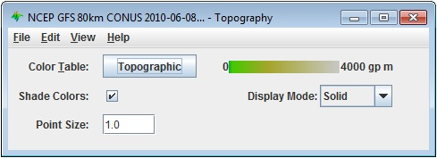

Overview
The Topography controls allow for displaying topography datasets. These controls are available through the 3D Surface->Topography display type. An example of a field that can utilize this display type is the 2D 'Geopotential Height @ Surface' field in model data. The first image shows the control user interface which allows for customizing many options with this display.

Image 1: Topography Controls Properties Dialog
Image 1: Topography Controls Properties Dialog
This is an example of how the display may appear in the Main Display window:

Image 2: Topography Displayed in the Main Display Window
Properties
- Color Table - Shows the active color table and the associated high and low data values in the units of the display. As the mouse pointer is moved over the color bar, the value at a particular color is shown. Right click on the color bar or click on the button that displays the name of the Color Table to make modifications to the color bar. This allows for opening the Color Table Editor, changing the range, selecting other color tables, etc.
- Shade Colors - Blends neighboring colors together to smooth the image.
- Display Mode - Sets the way the texture of the data is displayed. The valid options are Solid, Mesh, or Points. This is useful for looking at the structure of the underlying data.
- Point Size - Changes the size of the points in the Main Display window when the Points Display Mode is chosen.
Menus
Many of the menu items seen utilizing this display are standard options that can be found in the Menus section of the Layer Controls page. However, there is one option that is unique to this display.
The View menu has these unique options:
- Use Grid Projection - Re-centers the display and resets the zoom level back to the display's initial settings without changing any other preferences that have been modified.
- Enable Adaptive Resolution (Under Development) - Turns adaptive resolution on or off for the layer. This menu item is only available if adaptive resolution is enabled in the User Preferences. Note that adaptive resolution is still under development.